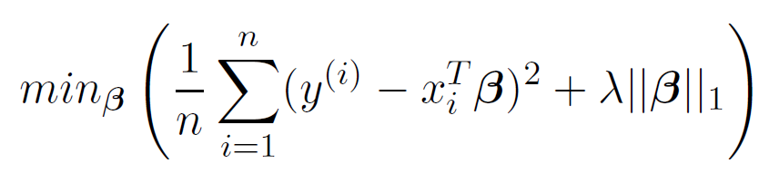

<!DOCTYPE html>


<html lang="zh-CN">
  

    <head>
      <meta charset="utf-8" />
        
      <meta
        name="viewport"
        content="width=device-width, initial-scale=1, maximum-scale=1"
      />
      <title>可解释的机器学习 |  墨冰的博客</title>
  <meta name="generator" content="hexo-theme-ayer">
      
      <link rel="shortcut icon" href="/favicon.ico" />
       
<link rel="stylesheet" href="/dist/main.css">

      <link
        rel="stylesheet"
        href="https://cdn.jsdelivr.net/gh/Shen-Yu/cdn/css/remixicon.min.css"
      />
      
<link rel="stylesheet" href="/css/custom.css">
 
      <script src="https://cdn.jsdelivr.net/npm/pace-js@1.0.2/pace.min.js"></script>
       
 

      <link
        rel="stylesheet"
        href="https://cdn.jsdelivr.net/npm/@sweetalert2/theme-bulma@5.0.1/bulma.min.css"
      />
      <script src="https://cdn.jsdelivr.net/npm/sweetalert2@11.0.19/dist/sweetalert2.min.js"></script>

      <!-- mermaid -->
      
      <style>
        .swal2-styled.swal2-confirm {
          font-size: 1.6rem;
        }
      </style>
    </head>
  </html>
</html>


<body>
  <div id="app">
    
      
    <main class="content on">
      <section class="outer">
  <article
  id="post-可解释的机器学习"
  class="article article-type-post"
  itemscope
  itemprop="blogPost"
  data-scroll-reveal
>
  <div class="article-inner">
    
    <header class="article-header">
       
<h1 class="article-title sea-center" style="border-left:0" itemprop="name">
  可解释的机器学习
</h1>
 

      
    </header>
     
    <div class="article-meta">
      <a href="/2022/05/04/%E5%8F%AF%E8%A7%A3%E9%87%8A%E7%9A%84%E6%9C%BA%E5%99%A8%E5%AD%A6%E4%B9%A0/" class="article-date">
  <time datetime="2022-05-04T07:05:04.000Z" itemprop="datePublished">2022-05-04</time>
</a> 
  <div class="article-category">
    <a class="article-category-link" href="/categories/%E9%95%BF%E5%89%91%E8%90%BD%E6%9C%88%E5%85%89/">长剑落月光</a>
  </div>
  
<div class="word_count">
    <span class="post-time">
        <span class="post-meta-item-icon">
            <i class="ri-quill-pen-line"></i>
            <span class="post-meta-item-text"> 字数统计:</span>
            <span class="post-count">7.1k</span>
        </span>
    </span>

    <span class="post-time">
        &nbsp; | &nbsp;
        <span class="post-meta-item-icon">
            <i class="ri-book-open-line"></i>
            <span class="post-meta-item-text"> 阅读时长≈</span>
            <span class="post-count">24 分钟</span>
        </span>
    </span>
</div>
 
    </div>
      
    <div class="tocbot"></div>


  
    <div class="article-entry" itemprop="articleBody">
       
  <h1 id="前言"><a href="#前言" class="headerlink" title="前言"></a>前言</h1><h2 id="什么是机器学习"><a href="#什么是机器学习" class="headerlink" title="什么是机器学习"></a>什么是机器学习</h2><ul>
<li><p>机器学习是计算机基于数据做出和改进预测或行为的一套方法。</p>
</li>
<li><p>抽象方法</p>
<ul>
<li>步骤一：数据采集，越多越好。数据必须包含你要预测的结果以及要从中进行预测的其他信息。</li>
<li>步骤二：将这些信息输⼊机器学习算法。</li>
<li>步骤三：将新数据输⼊模型。将模型集成到产品或流程中。</li>
</ul>
</li>
</ul>
<h2 id="术语"><a href="#术语" class="headerlink" title="术语"></a>术语</h2><ul>
<li>算法(Algorithm)是机器为达到特定目标而遵循的一组规则。</li>
<li>机器学习(Machine Learning)是一套方法，能够允许计算机从数据中学习，以做出和改进预测。</li>
<li>机器学习是从 “常规编程” (Normal Programming) 到 “间接编程”(Indirect Programming) 的一种范式转换，“常规编程” 是指所有指令都必须显式地提供给计算机，而“间接编程” 是通过提供数据来实现的。</li>
<li>学习器 (Learner) 或机器学习算法 (Machine Learning Algorithm) 是⽤来从数据中学习机器学习模型的程序。</li>
<li>黑盒模型 (Black Box Model) 是⼀个不揭⽰其内部机制的系统。在机器学习中，“黑盒模型”描述了通过查看参数 (例如深度神经⽹络的参数) 却无法理解的模型。黑盒的对立面有时被称为白盒 (White Box)，在本书中被称为可解释模型。模型无关的解释方法将机器学习模型视为⿊盒 (即使这些模型本身不是黑盒)。</li>
<li>可解释的机器学习 (Interpretable Machine Learning) 是指使机器学习系统的行为和预测对人类可理解的算法和模型。</li>
</ul>
<h1 id="可解释性"><a href="#可解释性" class="headerlink" title="可解释性"></a>可解释性</h1><ul>
<li>可解释性是⼈们能够理解决策原因的程度。</li>
<li>可解释性是指⼈们能够⼀致地预测模型结果的程度。</li>
</ul>
<h2 id="可解释性的重要性"><a href="#可解释性的重要性" class="headerlink" title="可解释性的重要性"></a>可解释性的重要性</h2><ul>
<li>了解 “为什么” 可以帮助你更多地了解问题、数据以及模型可能失败的原因。</li>
<li>机器的决策对人的生活影响越大，机器对它行为的解释就越重要。</li>
<li>科学的目标是获取知识，但是许多问题都是通过大数据集和黑盒机器学习模型来解决的。模型本身应该成为知识的来源，而不是数据。可解释性使得可以提取模型捕获的这些额外知识。</li>
<li>机器学习模型承担需要安全措施和测试的实际任务。</li>
<li>可解释性是机器学习模型中一种有效检测偏见的调试工具。</li>
<li>将机器和算法整合到日常生活中的过程需要可解释性，以增加社会认可度。</li>
<li>解释用于管理社交互动。通过创造某个事物的共同含义，解释者影响着解释的接收者的行为、情感和信念。</li>
<li>机器学习模型只有在可以解释时才能进行调试和审核。</li>
<li>确保机器学习能够解释决策，我们可以更容易检查的性质：<ul>
<li>公平性 (Fairness)：确保预测是公正的，不会隐式或显式地其实受保护地群体。</li>
<li>隐私(Privacy):确保保护数据中地敏感信息。</li>
<li>可靠性(Reliability)或鲁棒性(Reliability)：确保输入地小变化不会导致预测发生剧烈变化。</li>
<li>因果关系 (Causality)：检查是否只找到因果关系。</li>
<li>信任(Trust)：人们更容易信任解释器决策地系统。</li>
</ul>
</li>
</ul>
<h2 id="可解释性方法的分类"><a href="#可解释性方法的分类" class="headerlink" title="可解释性方法的分类"></a>可解释性方法的分类</h2><ul>
<li>本质的(Intrinsic)与事后的(Post-hoc)<ul>
<li>本质的可解释性是指由于结构简单而被认为是可解释的机器学习模型。</li>
<li>事后可解释性是指模型训练后运用解释方法。</li>
</ul>
</li>
<li>解释方法的输出<ul>
<li>特征概要统计量(Feature Summary Statistic)：为每个特征提供概要统计量以表现该特征的重要性。</li>
<li>特征概要可视化 (Feature Summary Visualization)：有些特征概要实际上只有在可视化的情况下才有意义（比如说图片）</li>
<li>模型内部(例如模型权重)(Model Internals)：例如用于分割特征的阈值。输出模型内部的可解释方法是特定于模型的。</li>
<li>数据点(Data Point)：通过返回已存在的或新创建的数据点使模型可解释。<ul>
<li>反事实解释(Counterfactual Explanations)：为了解释对数据实例的预测，通过改变某些特征以改变预测结果，找到相似的数据点。</li>
<li>识别预测类的原型，输出新数据点的解释方法要求可以解释数据点本身.</li>
</ul>
</li>
<li>本质上可解释模型：使用可解释模型对黑盒模型进行近似。</li>
</ul>
</li>
<li>特定于模型(Model-specific)和模型无关(Model-agnostic)</li>
<li>局部(Local)与全局(Global)</li>
</ul>
<h2 id="可解释性范围"><a href="#可解释性范围" class="headerlink" title="可解释性范围"></a>可解释性范围</h2><h3 id="算法透明度（算法是如何创建模型的？）"><a href="#算法透明度（算法是如何创建模型的？）" class="headerlink" title="算法透明度（算法是如何创建模型的？）"></a>算法透明度（算法是如何创建模型的？）</h3><ul>
<li>算法透明度是指算法如何从数据中学习模型，以及它可以学习到什么样的关系。</li>
<li>算法的透明度只需要对算法的了解，不需要对数据或学习模型的了解。</li>
</ul>
<h3 id="全局、整体的模型可解释性（训练好的模型如何进行预测？）"><a href="#全局、整体的模型可解释性（训练好的模型如何进行预测？）" class="headerlink" title="全局、整体的模型可解释性（训练好的模型如何进行预测？）"></a>全局、整体的模型可解释性（训练好的模型如何进行预测？）</h3><ul>
<li>一旦能理解整个模型，就可以将模型描述为可解释的</li>
<li>要解释全局模型输出，需要训练好的模型、算法知识和数据。</li>
<li>基于对模型特征和每个学习部分的整体认知来理解模型如何做出决策<ul>
<li>那些特征很重要</li>
<li>他们之间有什么样的交互作用</li>
<li>全局的模型可解释性有助于基于特征理解目标结果的分布</li>
</ul>
</li>
<li>通常人们视图理解一个模型时，只考虑其中的一部分</li>
</ul>
<h3 id="模块层面上的全局模型可解释性（模型的某些部分如何影响预测？）"><a href="#模块层面上的全局模型可解释性（模型的某些部分如何影响预测？）" class="headerlink" title="模块层面上的全局模型可解释性（模型的某些部分如何影响预测？）"></a>模块层面上的全局模型可解释性（模型的某些部分如何影响预测？）</h3><ul>
<li>全局模型可解释性通常是无法达到的，通常在模块层面上理解某些模型。</li>
<li>并非所有模型都可以在参数级别上解释<ul>
<li>对于线性模型，可解释部分是权重</li>
<li>对于树来说，可解释部分是分裂节点和叶节点预测</li>
<li>权重仅在模型中其他特征的上下文中有意义</li>
</ul>
</li>
</ul>
<h3 id="单个预测的局部可解释性（为什么模型会对一个实例做出某种预测？）"><a href="#单个预测的局部可解释性（为什么模型会对一个实例做出某种预测？）" class="headerlink" title="单个预测的局部可解释性（为什么模型会对一个实例做出某种预测？）"></a>单个预测的局部可解释性（为什么模型会对一个实例做出某种预测？）</h3><ul>
<li>在局部上，预测只依赖于线性或单调的某些特征，而不是对它们有复杂的依赖性。</li>
<li>局部解释比全局解释更精准。</li>
</ul>
<h3 id="一组预测的局部可解释性（为什么模型对一组实例进行特定的预测？）"><a href="#一组预测的局部可解释性（为什么模型对一组实例进行特定的预测？）" class="headerlink" title="一组预测的局部可解释性（为什么模型对一组实例进行特定的预测？）"></a>一组预测的局部可解释性（为什么模型对一组实例进行特定的预测？）</h3><ul>
<li>多个实例的模型预测可以用全局模型解释方法或单个实例的解释来解释。</li>
<li>全局方法可以通过获取实例组，将其视为一个完整的数据集以及使用全局方法处理这个数据集。</li>
<li>也可以对每个实例使用单独的局部解释方法，然后为整个组列出其结果或对结果进行聚合。</li>
</ul>
<h2 id="可解释性评估"><a href="#可解释性评估" class="headerlink" title="可解释性评估"></a>可解释性评估</h2><ul>
<li>应用级评估 (实际任务) (Application Level Evaluation)<ul>
<li>将解释放入产品中，由最终用户进行测试</li>
<li>需要一个良好的实验装置和对如何评估质量的理解</li>
<li>人类在解释相同决策时的表现是很好的基准</li>
</ul>
</li>
<li>人员级评估 (简单任务) (Human Level Evaluation)<ul>
<li>简化的应用级评估，由非专业人员进行</li>
<li>使实验更加廉价，能更容易找到更多的测试人员</li>
</ul>
</li>
<li>功能级评估 (代理任务) (Function Level Evaluation)<ul>
<li>不需要人工</li>
<li>当所使用的模型类已经由其他人在人员级评估进行评估时，是有效的</li>
<li>例如各种指标</li>
</ul>
</li>
</ul>
<h2 id="解释的性质"><a href="#解释的性质" class="headerlink" title="解释的性质"></a>解释的性质</h2><ul>
<li>解释(Explanation)通常以一种人类可理解的方式将实例的特征值与其模型预测联系起来</li>
<li>解释方法的性质<ul>
<li>表达能力(Expressive Power):<ul>
<li>解释方法能够产生的解释的语言或结构</li>
<li>解释方法可以是生成IF-THEN规则、决策树、加权和、自然语言或其他东西</li>
</ul>
</li>
<li>半透明(Translucency):<ul>
<li>描述了解释方法依赖于查看机器模型的程度、</li>
<li>依赖于本质上可解释模型(例如线性回归)的解释方法是高度透明的</li>
<li>仅依赖于修改输入和观察预测的半透明度为零</li>
<li>高半透明度的优点是该方法可以依赖更多的信息来生成解释</li>
<li>低半透明的优点是解释易于移植</li>
</ul>
</li>
<li>可移植性(Portability):<ul>
<li>描述使用解释方法的机器学习模型的范围</li>
</ul>
</li>
<li>算法复杂度(Algorithmic Complexity):<ul>
<li>描述了生成解释的方法的计算复杂度</li>
</ul>
</li>
</ul>
</li>
<li>单个解释的性质<ul>
<li>准确性(Accuracy)：<ul>
<li>解释预测看不见的数据会如何</li>
<li>解释代替机器模型进行预测的准确性</li>
</ul>
</li>
<li>保真度(Fidelity)：<ul>
<li>解释对黑盒模型预测的近似程度如何</li>
<li>一些解释只提供局部保真度，意味着该解释仅非常适合于数据子集的模型预测</li>
</ul>
</li>
<li>一致性(Consistency)：<ul>
<li>经过相同任务训练并产生相似预测的模型之间的解释有多少不同</li>
<li>如果两个模型使用不同特征却得到相似的预测，高度一致性是不可取的</li>
</ul>
</li>
<li>稳定性(Stability)：<ul>
<li>类似实例之间的解释有多相似</li>
<li>稳定性是同一模型相似实例之间的解释稳定性</li>
</ul>
</li>
<li>可理解性(Comprehensibility)：<ul>
<li>人类对解释的理解程度如何</li>
<li>测量可理解性的想法包括测量解释的大小或测试人们如何从解释中预测机器学习模型的行为</li>
</ul>
</li>
<li>确定性(Certainty)：<ul>
<li>解释是否反映了机器学习模型的确定性</li>
<li>许多模型只给出预测，而没有关于预测正确的模型置信度的描述</li>
</ul>
</li>
<li>重要程度(Degree of Importance)：<ul>
<li>解释多大程度上反映了解释的特征或部分的重要性</li>
<li>如果生成决策规则作为单个预测的解释，那么是否清楚该规则的哪个条件最重要。</li>
</ul>
</li>
<li>新颖性(Novelty)：<ul>
<li>解释是否反映了待解释的数据实例来自远离训练数据分布的新区域</li>
<li>新颖性越高，由于缺乏数据，模型的确定性就越低</li>
</ul>
</li>
<li>代表性(Representativeness)：<ul>
<li>一个解释能覆盖多少个实例</li>
</ul>
</li>
</ul>
</li>
</ul>
<h2 id="人性化的解释"><a href="#人性化的解释" class="headerlink" title="人性化的解释"></a>人性化的解释</h2><ul>
<li>人类更喜欢简短的解释(只有1-2个原因)</li>
<li>解释是解释者与被解释者之间的社会互动，社会背景对解释的实际内容有很大的影响</li>
<li>预测或行为的所有因素的解释：完整的因果归因</li>
</ul>
<h3 id="什么是解释"><a href="#什么是解释" class="headerlink" title="什么是解释"></a>什么是解释</h3><ul>
<li>解释是“为什么”这个问题的答案</li>
<li>解释(Explanation)一词是指解释的社会和认知过程，也指这些过程的产物。</li>
<li>解释者(Explainer)可以是人或机器</li>
</ul>
<h3 id="什么是好的解释"><a href="#什么是好的解释" class="headerlink" title="什么是好的解释"></a>什么是好的解释</h3><ul>
<li><p>解释具有对比性</p>
<ul>
<li>人们通常不会问为什么会做出某种预测，但会问为什么会做出这种预测而不是另一种预测。</li>
<li>最好的解释是强调感兴趣的对象和参照对象之间最大的差异</li>
<li>人类不希望对预测有一个完整的解释，而是希望将不同之处与另一个实例的预测进行比较</li>
<li>自动创建对比性解释的解决方案还肯涉及在数据中寻找原型</li>
</ul>
</li>
<li><p>选择性的解释</p>
<ul>
<li>人们不希望对涵盖事件的实际原因和完整原因进行解释</li>
<li>人们习惯于从各种可能的原因中选择一个或两个原因作为解释</li>
<li>一个事件可以由各种原因解释，为什么做出了某种预测也可能由不止一个选择性的解释</li>
</ul>
</li>
<li><p>解释是社会性的</p>
<ul>
<li>解释是解释者和解释的接收者之间的交互</li>
<li>社会背景决定了解释的内容和性质</li>
</ul>
</li>
<li><p>解释的重点是异常</p>
<ul>
<li>人们更关注异常原因来解释事件</li>
<li>如果一个预测的输入是异常的，并影响了预测，那么它应该将其包括在解释中</li>
</ul>
</li>
<li><p>解释是真实地</p>
<ul>
<li>良好地解释是真实的，但不是“好的”解释的重要因素</li>
<li>选择性似乎比真实性更重要</li>
<li>解释应该尽可能真实地预测事件</li>
<li>对人类来说，解释地保真度不如它的选择性、对比性和社会性重要</li>
</ul>
</li>
<li><p>好的解释与被解释者地先验知识是一致的</p>
<ul>
<li>人们往往忽视与他们先验知识不一致的信息，这种效应被称为确认偏差</li>
<li>这种偏差不可避免，人们往往会贬低或忽视与他们先验知识不一致的解释</li>
<li>先验知识因人而异</li>
<li>群体可能存在共同的先验知识</li>
<li>好的解释与先验知识是一致的</li>
</ul>
</li>
<li><p>好的解释是普遍性和很可能的</p>
<ul>
<li><p>可以普遍解释很多事件的解释可以被认为是一个好的解释</p>
</li>
<li><p>与异常原因能够做出好的解释说法矛盾</p>
<ul>
<li>作者认为 异常原因胜过普遍原因</li>
<li>在给定情况下，异常原因是罕见的，在没有异常事件的情况下，普遍性的解释被认为是一个好解释</li>
<li>人们往往会误判共同事件的可能性</li>
</ul>
</li>
<li><p>普遍性可以很容易通过特征的支持来衡量</p>
</li>
</ul>
</li>
</ul>
<h1 id="可解释的模型"><a href="#可解释的模型" class="headerlink" title="可解释的模型"></a>可解释的模型</h1><table>
<thead>
<tr>
<th align="center">算法</th>
<th align="center">线性</th>
<th align="center">单调</th>
<th align="center">交互</th>
<th align="center">任务</th>
</tr>
</thead>
<tbody><tr>
<td align="center">线性回归</td>
<td align="center">是</td>
<td align="center">是</td>
<td align="center">否</td>
<td align="center">回归</td>
</tr>
<tr>
<td align="center">逻辑回归</td>
<td align="center">否</td>
<td align="center">是</td>
<td align="center">否</td>
<td align="center">分类</td>
</tr>
<tr>
<td align="center">决策树</td>
<td align="center">否</td>
<td align="center">部分</td>
<td align="center">是</td>
<td align="center">分类；回归</td>
</tr>
<tr>
<td align="center">RuleFit</td>
<td align="center">是</td>
<td align="center">否</td>
<td align="center">是</td>
<td align="center">分类；回归</td>
</tr>
<tr>
<td align="center">朴素贝叶斯</td>
<td align="center">否</td>
<td align="center">是</td>
<td align="center">否</td>
<td align="center">分类</td>
</tr>
<tr>
<td align="center">k-最近邻</td>
<td align="center">否</td>
<td align="center">否</td>
<td align="center">否</td>
<td align="center">分类；回归</td>
</tr>
</tbody></table>
<h2 id="线性回归"><a href="#线性回归" class="headerlink" title="线性回归"></a>线性回归</h2><ul>
<li>线性回归(Linear Regression)将目标预测为特征输入的加权和</li>
<li>所学关系的线性使解释变得容易</li>
<li>线性回归模型的线性特点使估计过程变得简单</li>
<li>线性方程在模块化水平上具有易于解释的理解</li>
<li>模型是否为正确的模型取决于数据中的关系是否满足某些假设<ul>
<li>线性<ul>
<li>线性回归使预测成为特征的线性组合</li>
<li>线性易于量化和描述，它们可加并容易分离</li>
</ul>
</li>
<li>正态性<ul>
<li>假设给定的目标结果服从正态分布</li>
<li>若违反此假设，则特征权重的估计置信区间无效</li>
</ul>
</li>
<li>同方差性<ul>
<li>假设误差项的方差在整个特征空间内是恒定的</li>
<li>该假设在现实中经常被违背<ul>
<li>现实中由于不同值的不同意义，误差常常不同</li>
<li>如不同大小的房屋价格估计误差常常不同</li>
</ul>
</li>
</ul>
</li>
<li>独立性<ul>
<li>假设每个实例独立于其他实例</li>
<li>如果存在相关关系，需要使用特殊的模型，否则会的出错误的结论</li>
</ul>
</li>
<li>固定特征<ul>
<li>输入特征被认为是固定的</li>
<li>固定意味着它们被视为给定常数，而不是统计向量，意味着它们没有测量误差</li>
</ul>
</li>
<li>不存在多重共线性<ul>
<li>不需要强相关的特征，这回扰乱对权重的估计</li>
<li>在两个特征强相关的情况下，由于特征效应是累加的，估计权重变得困难，无法确定哪一个相关特征归因了效应</li>
</ul>
</li>
</ul>
</li>
</ul>
<h3 id="解释"><a href="#解释" class="headerlink" title="解释"></a>解释</h3><ul>
<li>线性回归模型中权重的解释取决于相应特征的类型<ul>
<li>数值特征：将数值特征增加一个单位会根据其权重改变估计结果</li>
<li>二分类特征：每个实例都采用两个可能值之一的特征。该特征从参照类型更改为其他类型会根据特征的权重改变估计结果</li>
<li>具有多个类别的分类特征：具有固定数量的可能值特征</li>
<li>截距项β：截距是“常量特征”的特征权重，对于所有实例都是1。结局的解释通常不相关。</li>
</ul>
</li>
<li>数值特征的解释<ul>
<li>当其他特征保持不变时，特征x每增加一个单位，预测结果y增加z</li>
</ul>
</li>
<li>分类特征的解释<ul>
<li>当所有其他特征保持不变时，特征x参照类别改变为其他类别时，预测结果y增加z</li>
<li>R-平方度量(R-squared Measurement)<ul>
<li>该指标表现了模型解释了目标结果的总方差中的多少</li>
<li>该指标越高，模型对数据的解释就越好</li>
<li>R^2 = 1 - SSE/SST<ul>
<li>SSE 为误差项的平方和<ul>
<li>表现拟合线性模型还有多少方差</li>
</ul>
</li>
<li>SST 是数据方差的平方和<ul>
<li>目标结果的总方差</li>
</ul>
</li>
</ul>
</li>
<li>优化后的R-平方<ul>
<li>Ro^2 = 1 - ( 1 - R^2 )( n - 1)/( n - p - 1)<ul>
<li>p为特征的数量</li>
<li>n为实例的数量</li>
</ul>
</li>
<li>考虑了模型中的特征数量</li>
<li>解释一个调整后的R平方很低的模型是没有意义的，因为这样的模型基本上不能解释大部分的方差</li>
</ul>
</li>
<li>特征重要性<ul>
<li>线性回归模型中的某个特征重要性可以用它的 t-统计量(t-statistic)的绝对值衡量</li>
<li>t-统计量是以标准差为尺度的估计权重<ul>
<li>t = β / SE(β)</li>
</ul>
</li>
<li>特征的重要性随着权重的增加而增加</li>
<li>估计权重的方差越大，特征越不重要</li>
</ul>
</li>
</ul>
</li>
</ul>
</li>
</ul>
<h3 id="可视化解释"><a href="#可视化解释" class="headerlink" title="可视化解释"></a>可视化解释</h3><ul>
<li>权重图 (Weight Plot)<ul>
<li>权重表中的权重和方差估计可以在权重图中可视化</li>
</ul>
</li>
<li>效应图 (Effect Plot)<ul>
<li>当线性回归模型的权重与实际特征值相乘时，可以更有意义地进行分析</li>
<li>权重取决于特性地比例</li>
<li>特征效应<ul>
<li>effect = w * x （权重 * x）</li>
</ul>
</li>
</ul>
</li>
</ul>
<h3 id="解释单个实例预测"><a href="#解释单个实例预测" class="headerlink" title="解释单个实例预测"></a>解释单个实例预测</h3><ul>
<li>计算单个实例地特征对预测有多大贡献</li>
<li>特定实例地特征效应地解释仅与各个特征地特征效应分布相比较才有意义</li>
</ul>
<h3 id="分类特征的编码"><a href="#分类特征的编码" class="headerlink" title="分类特征的编码"></a><a target="_blank" rel="noopener" href="https://stats.oarc.ucla.edu/r/library/r-library-contrast-coding-systems-for-categorical-variables/">分类特征的编码</a></h3><ul>
<li>Treatment Coding<ul>
<li>每个类别的权重是对应类别和参照类别之间预测估计插值</li>
<li>第一列是截距</li>
<li>第二列是实例是否在B类中</li>
<li>第三列是实例是否再C类中</li>
</ul>
</li>
<li>Effect Coding<ul>
<li>每个类别的权重是从相应类别到总体均值的估计y值的差</li>
<li>第一列用于估计截距，用β0表示总体均值</li>
<li>第二列的权重表示总体均值与B类之间的差异<ul>
<li>B类的总体效应为β0+β1</li>
</ul>
</li>
<li>第三列C同理</li>
</ul>
</li>
<li>Dummy coding<ul>
<li>每个类别的β是这个类别y的估计均值</li>
</ul>
</li>
</ul>
<h3 id="线性模型是否有很好的解释"><a href="#线性模型是否有很好的解释" class="headerlink" title="线性模型是否有很好的解释"></a>线性模型是否有很好的解释</h3><ul>
<li>线性模型并不能创建最佳解释</li>
<li>线性模型是对比性的，但是参照是构造的一个数据点，其中所有数值特征都为零</li>
<li>分类特征设置为它们的参照类别，不太可能出现再真实数据或现实中</li>
<li>只有再所有数值特征均以均值为中心，并且所有分类特征都是Effect Coding的，参照实例就是所有特征取平均特征值的数据点</li>
</ul>
<h3 id="稀疏线性模型"><a href="#稀疏线性模型" class="headerlink" title="稀疏线性模型"></a>稀疏线性模型</h3><h4 id="Lasso"><a href="#Lasso" class="headerlink" title="Lasso"></a>Lasso</h4><ul>
<li>Lasso是一种将稀疏性引入线性回归模型的自动渐变方法</li>
<li>Lasso代表 最小绝对收缩和选择算子</li>
<li>Lasso为优化问题添加了特征向量的L1范数</li>
</ul>
<p></p>
<ul>
<li>使用L1范数会使部分权重的估计值为0，其他权重的估计值缩小</li>
</ul>
<h4 id="其他线性模型稀疏方法"><a href="#其他线性模型稀疏方法" class="headerlink" title="其他线性模型稀疏方法"></a>其他线性模型稀疏方法</h4><ul>
<li>预处理方法<ul>
<li>手动选择特征：使用专家知识选择或放弃某些特征</li>
<li>单变量选择</li>
</ul>
</li>
<li>分布方法<ul>
<li>向前选择：<ul>
<li>用一个特征拟合线性模型，对每个特征都执行此操作</li>
<li>选择最有效的模型</li>
<li>对于其余的特征，通过将每个特征添加到当前的最佳模型中来拟合模型的不同版本，选择最好的一个</li>
<li>重复操作，直到达到条件，例如最大特征数</li>
</ul>
</li>
<li>向后选择<ul>
<li>从包含所有特征的模型开始</li>
<li>尝试删除某个特征以达到性能最大程度的提高</li>
<li>重复操作直至达到某个条件</li>
</ul>
</li>
</ul>
</li>
</ul>
<h3 id="优点"><a href="#优点" class="headerlink" title="优点"></a>优点</h3><ul>
<li>将预测建模为一个加权和，使预测的生成变得透明</li>
<li>在许多地方预测和推理都被接受</li>
<li>有很高水平的集体经验和专业知识</li>
<li>估计权重很简单，可以保证找到最佳权重</li>
<li>与权重一起，还可以得到置信区间，检验和可靠的统计理论</li>
</ul>
<h3 id="缺点"><a href="#缺点" class="headerlink" title="缺点"></a>缺点</h3><ul>
<li>线性回归模型只能表示线性关系</li>
<li>每一个非线性或交互都必须是人工构成的</li>
<li>线性模型的预测性能通常不好</li>
<li>权重的解释可能不直观</li>
<li>完全相关的特征可能找不到线性方程的唯一解</li>
<li>相关性太强时，线性方程变得不稳定</li>
</ul>
<h2 id="逻辑回归"><a href="#逻辑回归" class="headerlink" title="逻辑回归"></a>逻辑回归</h2><ul>
<li>逻辑回归(Logistic Regression)建模有两个可能结果的概率分类问题，它是针对分类问题的线性回归模型的扩展</li>
</ul>
<h3 id="线性回归用于分类有什么问题"><a href="#线性回归用于分类有什么问题" class="headerlink" title="线性回归用于分类有什么问题"></a>线性回归用于分类有什么问题</h3><ul>
<li><p>线性模型不输出概率，但他将类视为数字（0和1），并拟合最佳超平面，以最小化点和超平面之间的距离。它只是在点之间插值，并不能把它解释为概率。</p>
</li>
<li><p>由于预测的结果不是概率，而是点与点之间的线性插值，没有一个有意义的阈值可以用来区分一个类和另一个类。<a target="_blank" rel="noopener" href="https://stats.stackexchange.com/questions/22381/why-not-approach-classification-through-regression">[Stackoverflow]</a></p>
</li>
<li><p>线性模型不能扩展到居于偶多个类的分类问题。</p>
</li>
</ul>
<h3 id="理论"><a href="#理论" class="headerlink" title="理论"></a>理论</h3><ul>
<li>逻辑回归不是拟合直线或超平面，而是使用逻辑函数将线性方程的输出挤压到0到1之间。$logistic(n) = \frac{1}{1+exp(-\eta)}$</li>
</ul>
<h3 id="解释-1"><a href="#解释-1" class="headerlink" title="解释"></a>解释</h3><ul>
<li><p>odds被称为几率，指时间发生概率除以事件不发生概率</p>
</li>
<li><p>$\frac{odds_{x_j+1}}{odds} = \frac{exp(\beta_0+\beta_1x_1+…\beta_j(x_j+1)+…+\beta_px_p}{exp(\beta_0+\beta_1x_1+…\beta_jx_j+…+\beta_px_p}$</p>
</li>
<li><p>$\frac{odds_{x_j+1}}{odds} = exp(\beta_j(x_j+1)-\beta_jx_j) = exp(\beta_j)$</p>
</li>
<li><p>数值特征：如果你将特征$x_j$增加一个单位，则估计的几率将乘以因子$exp(\beta_j)$</p>
</li>
<li><p>二分类特征：只取两种可能指的特征，其以是参照类别。将特征$x_j$从参照类别更改为其他类别，则估计的几率将乘以因子$exp(\beta_j)$</p>
</li>
<li><p>截距项$\beta_0$：所有数字特征为零和分类特征为参照类别，则估计的几率是$exp(\beta_0)$。截距的解释通常不相关。</p>
</li>
</ul>
<h3 id="优缺点"><a href="#优缺点" class="headerlink" title="优缺点"></a>优缺点</h3><ul>
<li><p>逻辑回归的解释更加困难，权重的解释是乘法而不是加法</p>
</li>
<li><p>逻辑回归可能受到完全分离(Complete Separation)的影响。</p>
<ul>
<li><p>如果有一个特征能够将两个类完全分开，那么逻辑回归模型就不能再被训练了。</p>
</li>
<li><p>该特征的权重不会首先，因为最佳权重将是无限的</p>
</li>
</ul>
</li>
<li><p>逻辑回归模型不仅是一个分类模型，而且还给出概率。</p>
</li>
</ul>
<h2 id="FLM-GAM和其他模型"><a href="#FLM-GAM和其他模型" class="headerlink" title="FLM,GAM和其他模型"></a>FLM,GAM和其他模型</h2><ul>
<li><p>广义线性模型(Generalized Linear Models, GLMs)</p>
<ul>
<li>解决给定特征目标结果y不遵循高斯分布问题</li>
</ul>
</li>
<li><p>广义加性模型(Generalized Additive Models, GAMs)</p>
<ul>
<li>解决特征和y之间的真实关系不是线性的问题</li>
</ul>
</li>
</ul>
<h3 id="非高斯输出结果-GLM"><a href="#非高斯输出结果-GLM" class="headerlink" title="非高斯输出结果 - GLM"></a>非高斯输出结果 - GLM</h3><ul>
<li><p>核心概念：保留特征的加权和，但允许非高斯结果分布，并通过可能的非线性函数连接该分布的期望均值与加权和。</p>
</li>
<li><p>经典线性模型被看作GLM的一个特例，经典线性模型中高斯分布的连接函数是一个简单的恒等函数。高斯分布由均值和方差进行参数化。均值描述了期望均值，方差则描述了在均值上下值的变化程度。<a target="_blank" rel="noopener" href="https://en.wikipedia.org/wiki/Exponential_family#Table_of_distributions">[指数族分布表]</a></p>
</li>
<li><p>在GLM框架下，这个概念推广到任意分布和任意连接函数。</p>
</li>
</ul>
<h3 id="交互"><a href="#交互" class="headerlink" title="交互"></a>交互</h3><ul>
<li><p>线性回归模型假设一个特征的效应是保持相同的，与其他特征的值无关。</p>
</li>
<li><p>在拟合线性模型之前，在特征矩阵中添加一列，表示特征之间的交互，并像往常一样拟合模型。</p>
</li>
</ul>
<h3 id="非线性效应-GAM"><a href="#非线性效应-GAM" class="headerlink" title="非线性效应-GAM"></a>非线性效应-GAM</h3><ul>
<li>非线性关系建模<ul>
<li><p>特征转换（如对数）</p>
</li>
<li><p>特征分类</p>
</li>
<li><p>广义加性模型（GAM）</p>
<ul>
<li>假定关系可以由每个特征的任意函数的和建模结果</li>
</ul>
</li>
</ul>
</li>
</ul>
<h3 id="优点-1"><a href="#优点-1" class="headerlink" title="优点"></a>优点</h3><ul>
<li><p>线性模型具有广泛的应用，并被许多社区认为是建模的现状</p>
</li>
<li><p>除了进行预测之外，还可以使用模型进行推断，得出有关数据的结论；并可以得到权重的置信区间、显著性检验、预测区间。</p>
</li>
</ul>
<h3 id="缺点-1"><a href="#缺点-1" class="headerlink" title="缺点"></a>缺点</h3><ul>
<li><p>线性模型的大多数修改都会使模型的解释性变差。</p>
</li>
<li><p>GLM、GAM等依赖于有关数据生成的假设，如果违反了这些假设，则对权重的解释不再有效。</p>
</li>
</ul>
<h2 id="决策树"><a href="#决策树" class="headerlink" title="决策树"></a>决策树</h2><ul>
<li><p>线性回归和逻辑回归在特征与结果之间的关系为非线性或特征交互的情况下会失败。</p>
</li>
<li><p>基于树的模型根据特征中的某些截断值多次分割数据。</p>
</li>
<li><p>通过分割，创建数据集的不同子集，每个实例都属于一个自己。</p>
</li>
<li><p>为了预测每个叶节点的结果，使用该节点中训练数据的平均结果。</p>
</li>
</ul>
<h3 id="解释-2"><a href="#解释-2" class="headerlink" title="解释"></a>解释</h3><ul>
<li>从根节点开始，转到下一个节点，边表明要查看的子集。一旦到达叶节点，该节点将表明预测的结果。</li>
</ul>
<h4 id="特征重要性"><a href="#特征重要性" class="headerlink" title="特征重要性"></a>特征重要性</h4><ul>
<li>决策树中特征的总体重要性计算方式：<ul>
<li><p>遍历使用该特征的所有分割，测量它相对于父节点减少了多少方差或基尼指数。</p>
</li>
<li><p>所有重要性的综合被缩放为100，每个重要性可以解释为总体模型重要性的一部分</p>
</li>
</ul>
</li>
</ul>
<h4 id="树分解"><a href="#树分解" class="headerlink" title="树分解"></a>树分解</h4><ul>
<li><p>通过将决策路径分解为每个特征的组成，可以解释决策树的单个预测</p>
</li>
<li><p>可以通过树跟踪决策，并通过在每个决策节点上添加的贡献来解释预测</p>
</li>
</ul>
<h3 id="优点-2"><a href="#优点-2" class="headerlink" title="优点"></a>优点</h3><ul>
<li><p>树结构非常适合捕获数据中特征之间的交互</p>
</li>
<li><p>数据最终被分成不同的组，不线性回归中多维超平面上的点容易理解</p>
</li>
<li><p>树结构由一个自然的可视化，包括它的节点和边</p>
</li>
<li><p>不需要转换特征</p>
</li>
</ul>
<h3 id="缺点-2"><a href="#缺点-2" class="headerlink" title="缺点"></a>缺点</h3><ul>
<li>树不能处理线性关系。输入特征和结果之间的任何线性关系都必须能通过分割来近似，从而创建一个阶跃函数。<ul>
<li><p>缺乏平滑度</p>
</li>
<li><p>不稳定</p>
</li>
<li><p>终端节点的数量随深度的增加而迅速增加</p>
</li>
</ul>
</li>
</ul>
<h2 id="决策规则"><a href="#决策规则" class="headerlink" title="决策规则"></a>决策规则</h2><ul>
<li><p>决策规则是一个简单的IF-THEN语句，由条件和预测组成。</p>
</li>
<li><p>决策规则可能是最容易解释的预测模型。</p>
</li>
<li><p>决策规则的有用性通常概括为两个数字：支持度(Support)和准确性(Accuracy)</p>
<ul>
<li><p>规则的支持度或覆盖度：规则条件适用的实例所占的百分比称为支持度</p>
</li>
<li><p>规则的准确性或置信度：规则的准确性是衡量规则在规则条件适用的实例预测正确类别时的准确性的指标。</p>
</li>
</ul>
</li>
<li><p>组合多个规则的两种主要策略</p>
<ul>
<li><p>决策列表</p>
<ul>
<li><p>决策列表向决策规则引入有序</p>
</li>
<li><p>如果第一条规则对实例的条件为真，则使用第一条预测的规则</p>
</li>
<li><p>如果没有，转移到下一个规则</p>
</li>
<li><p>决策列表只返回适用列表第一个规则的预测来解决重叠规则的问题</p>
</li>
</ul>
</li>
<li><p>决策集</p>
<ul>
<li><p>决策集类似于规则的民主，只是有些规则困难有更高的投票权</p>
</li>
<li><p>当一些规则适用时，解释性可能会受到影响</p>
</li>
</ul>
</li>
</ul>
</li>
</ul>
 
      <!-- reward -->
      
    </div>
    

    <!-- copyright -->
    
    <div class="declare">
      <ul class="post-copyright">
        <li>
          <i class="ri-copyright-line"></i>
          <strong>版权声明： </strong>
          
          本博客所有文章除特别声明外，著作权归作者所有。转载请注明出处！
          
        </li>
      </ul>
    </div>
    
    <footer class="article-footer">
       
<div class="share-btn">
      <span class="share-sns share-outer">
        <i class="ri-share-forward-line"></i>
        分享
      </span>
      <div class="share-wrap">
        <i class="arrow"></i>
        <div class="share-icons">
          
          <a class="weibo share-sns" href="javascript:;" data-type="weibo">
            <i class="ri-weibo-fill"></i>
          </a>
          <a class="weixin share-sns wxFab" href="javascript:;" data-type="weixin">
            <i class="ri-wechat-fill"></i>
          </a>
          <a class="qq share-sns" href="javascript:;" data-type="qq">
            <i class="ri-qq-fill"></i>
          </a>
          <a class="douban share-sns" href="javascript:;" data-type="douban">
            <i class="ri-douban-line"></i>
          </a>
          <!-- <a class="qzone share-sns" href="javascript:;" data-type="qzone">
            <i class="icon icon-qzone"></i>
          </a> -->
          
          <a class="facebook share-sns" href="javascript:;" data-type="facebook">
            <i class="ri-facebook-circle-fill"></i>
          </a>
          <a class="twitter share-sns" href="javascript:;" data-type="twitter">
            <i class="ri-twitter-fill"></i>
          </a>
          <a class="google share-sns" href="javascript:;" data-type="google">
            <i class="ri-google-fill"></i>
          </a>
        </div>
      </div>
</div>

<div class="wx-share-modal">
    <a class="modal-close" href="javascript:;"><i class="ri-close-circle-line"></i></a>
    <p>扫一扫，分享到微信</p>
    <div class="wx-qrcode">
      
    </div>
</div>

<div id="share-mask"></div>  
  <ul class="article-tag-list" itemprop="keywords"><li class="article-tag-list-item"><a class="article-tag-list-link" href="/tags/%E5%8F%AF%E8%A7%A3%E9%87%8A/" rel="tag">可解释</a></li><li class="article-tag-list-item"><a class="article-tag-list-link" href="/tags/%E6%9C%BA%E5%99%A8%E5%AD%A6%E4%B9%A0/" rel="tag">机器学习</a></li><li class="article-tag-list-item"><a class="article-tag-list-link" href="/tags/%E6%B7%B1%E5%BA%A6%E5%AD%A6%E4%B9%A0/" rel="tag">深度学习</a></li></ul>

    </footer>
  </div>

   
  <nav class="article-nav">
    
      <a href="/2022/06/04/%E6%8E%A8%E8%8D%90%E7%B3%BB%E7%BB%9F/" class="article-nav-link">
        <strong class="article-nav-caption">上一篇</strong>
        <div class="article-nav-title">
          
            推荐系统
          
        </div>
      </a>
    
    
      <a href="/2022/03/29/%E5%8F%82%E4%B8%8E%E6%84%9F/" class="article-nav-link">
        <strong class="article-nav-caption">下一篇</strong>
        <div class="article-nav-title">参与感-小米口碑营销内部手册</div>
      </a>
    
  </nav>

  
   
     
</article>

</section>
      <footer class="footer">
  <div class="outer">
    <ul>
      <li>
        Copyrights &copy;
        2017-2022
        <i class="ri-heart-fill heart_icon"></i> Ink East
      </li>
    </ul>
    <ul>
      <li>
        
      </li>
    </ul>
    <ul>
      <li>
        
        
        <span>
  <span><i class="ri-user-3-fill"></i>访问人数:<span id="busuanzi_value_site_uv"></span></span>
  <span class="division">|</span>
  <span><i class="ri-eye-fill"></i>浏览次数:<span id="busuanzi_value_page_pv"></span></span>
</span>
        
      </li>
    </ul>
    <ul>
      
    </ul>
    <ul>
      
    </ul>
    <ul>
      <li>
        <!-- cnzz统计 -->
        
      </li>
    </ul>
  </div>
</footer>    
    </main>
    <div class="float_btns">
      <div class="totop" id="totop">
  <i class="ri-arrow-up-line"></i>
</div>

<div class="todark" id="todark">
  <i class="ri-moon-line"></i>
</div>

    </div>
    <aside class="sidebar on">
      <button class="navbar-toggle"></button>
<nav class="navbar">
  
  <div class="logo">
    <a href="/"></a>
  </div>
  
  <ul class="nav nav-main">
    
    <li class="nav-item">
      <a class="nav-item-link" href="/">主页</a>
    </li>
    
    <li class="nav-item">
      <a class="nav-item-link" href="/archives">归档</a>
    </li>
    
    <li class="nav-item">
      <a class="nav-item-link" href="/categories">分类</a>
    </li>
    
    <li class="nav-item">
      <a class="nav-item-link" href="/tags">标签</a>
    </li>
    
    <li class="nav-item">
      <a class="nav-item-link" href="/about">关于我</a>
    </li>
    
  </ul>
</nav>
<nav class="navbar navbar-bottom">
  <ul class="nav">
    <li class="nav-item">
      
      <a class="nav-item-link nav-item-search"  title="搜索">
        <i class="ri-search-line"></i>
      </a>
      
      
      <a class="nav-item-link" target="_blank" href="/atom.xml" title="RSS Feed">
        <i class="ri-rss-line"></i>
      </a>
      
    </li>
  </ul>
</nav>
<div class="search-form-wrap">
  <div class="local-search local-search-plugin">
  <input type="search" id="local-search-input" class="local-search-input" placeholder="Search...">
  <div id="local-search-result" class="local-search-result"></div>
</div>
</div>
    </aside>
    <div id="mask"></div>

<!-- #reward -->
<div id="reward">
  <span class="close"><i class="ri-close-line"></i></span>
  <p class="reward-p"><i class="ri-cup-line"></i>请我喝杯咖啡吧~</p>
  <div class="reward-box">
    
    <div class="reward-item">
      
      <span class="reward-type">支付宝</span>
    </div>
    
    
    <div class="reward-item">
      
      <span class="reward-type">微信</span>
    </div>
    
  </div>
</div>
    
<script src="/js/jquery-3.6.0.min.js"></script>
 
<script src="/js/lazyload.min.js"></script>

<!-- Tocbot -->
 
<script src="/js/tocbot.min.js"></script>

<script>
  tocbot.init({
    tocSelector: ".tocbot",
    contentSelector: ".article-entry",
    headingSelector: "h1, h2, h3, h4, h5, h6",
    hasInnerContainers: true,
    scrollSmooth: true,
    scrollContainer: "main",
    positionFixedSelector: ".tocbot",
    positionFixedClass: "is-position-fixed",
    fixedSidebarOffset: "auto",
  });
</script>

<script src="https://cdn.jsdelivr.net/npm/jquery-modal@0.9.2/jquery.modal.min.js"></script>
<link
  rel="stylesheet"
  href="https://cdn.jsdelivr.net/npm/jquery-modal@0.9.2/jquery.modal.min.css"
/>
<script src="https://cdn.jsdelivr.net/npm/justifiedGallery@3.7.0/dist/js/jquery.justifiedGallery.min.js"></script>

<script src="/dist/main.js"></script>

<!-- ImageViewer -->
 <!-- Root element of PhotoSwipe. Must have class pswp. -->
<div class="pswp" tabindex="-1" role="dialog" aria-hidden="true">

    <!-- Background of PhotoSwipe. 
         It's a separate element as animating opacity is faster than rgba(). -->
    <div class="pswp__bg"></div>

    <!-- Slides wrapper with overflow:hidden. -->
    <div class="pswp__scroll-wrap">

        <!-- Container that holds slides. 
            PhotoSwipe keeps only 3 of them in the DOM to save memory.
            Don't modify these 3 pswp__item elements, data is added later on. -->
        <div class="pswp__container">
            <div class="pswp__item"></div>
            <div class="pswp__item"></div>
            <div class="pswp__item"></div>
        </div>

        <!-- Default (PhotoSwipeUI_Default) interface on top of sliding area. Can be changed. -->
        <div class="pswp__ui pswp__ui--hidden">

            <div class="pswp__top-bar">

                <!--  Controls are self-explanatory. Order can be changed. -->

                <div class="pswp__counter"></div>

                <button class="pswp__button pswp__button--close" title="Close (Esc)"></button>

                <button class="pswp__button pswp__button--share" style="display:none" title="Share"></button>

                <button class="pswp__button pswp__button--fs" title="Toggle fullscreen"></button>

                <button class="pswp__button pswp__button--zoom" title="Zoom in/out"></button>

                <!-- Preloader demo http://codepen.io/dimsemenov/pen/yyBWoR -->
                <!-- element will get class pswp__preloader--active when preloader is running -->
                <div class="pswp__preloader">
                    <div class="pswp__preloader__icn">
                        <div class="pswp__preloader__cut">
                            <div class="pswp__preloader__donut"></div>
                        </div>
                    </div>
                </div>
            </div>

            <div class="pswp__share-modal pswp__share-modal--hidden pswp__single-tap">
                <div class="pswp__share-tooltip"></div>
            </div>

            <button class="pswp__button pswp__button--arrow--left" title="Previous (arrow left)">
            </button>

            <button class="pswp__button pswp__button--arrow--right" title="Next (arrow right)">
            </button>

            <div class="pswp__caption">
                <div class="pswp__caption__center"></div>
            </div>

        </div>

    </div>

</div>

<link rel="stylesheet" href="https://cdn.jsdelivr.net/npm/photoswipe@4.1.3/dist/photoswipe.min.css">
<link rel="stylesheet" href="https://cdn.jsdelivr.net/npm/photoswipe@4.1.3/dist/default-skin/default-skin.min.css">
<script src="https://cdn.jsdelivr.net/npm/photoswipe@4.1.3/dist/photoswipe.min.js"></script>
<script src="https://cdn.jsdelivr.net/npm/photoswipe@4.1.3/dist/photoswipe-ui-default.min.js"></script>

<script>
    function viewer_init() {
        let pswpElement = document.querySelectorAll('.pswp')[0];
        let $imgArr = document.querySelectorAll(('.article-entry img:not(.reward-img)'))

        $imgArr.forEach(($em, i) => {
            $em.onclick = () => {
                // slider展开状态
                // todo: 这样不好，后面改成状态
                if (document.querySelector('.left-col.show')) return
                let items = []
                $imgArr.forEach(($em2, i2) => {
                    let img = $em2.getAttribute('data-idx', i2)
                    let src = $em2.getAttribute('data-target') || $em2.getAttribute('src')
                    let title = $em2.getAttribute('alt')
                    // 获得原图尺寸
                    const image = new Image()
                    image.src = src
                    items.push({
                        src: src,
                        w: image.width || $em2.width,
                        h: image.height || $em2.height,
                        title: title
                    })
                })
                var gallery = new PhotoSwipe(pswpElement, PhotoSwipeUI_Default, items, {
                    index: parseInt(i)
                });
                gallery.init()
            }
        })
    }
    viewer_init()
</script> 
<!-- MathJax -->

<!-- Katex -->

<!-- busuanzi  -->
 
<script src="/js/busuanzi-2.3.pure.min.js"></script>
 
<!-- ClickLove -->

<!-- ClickBoom1 -->

<!-- ClickBoom2 -->

<!-- CodeCopy -->
 
<link rel="stylesheet" href="/css/clipboard.css">
 <script src="https://cdn.jsdelivr.net/npm/clipboard@2/dist/clipboard.min.js"></script>
<script>
  function wait(callback, seconds) {
    var timelag = null;
    timelag = window.setTimeout(callback, seconds);
  }
  !function (e, t, a) {
    var initCopyCode = function(){
      var copyHtml = '';
      copyHtml += '<button class="btn-copy" data-clipboard-snippet="">';
      copyHtml += '<i class="ri-file-copy-2-line"></i><span>COPY</span>';
      copyHtml += '</button>';
      $(".highlight .code pre").before(copyHtml);
      $(".article pre code").before(copyHtml);
      var clipboard = new ClipboardJS('.btn-copy', {
        target: function(trigger) {
          return trigger.nextElementSibling;
        }
      });
      clipboard.on('success', function(e) {
        let $btn = $(e.trigger);
        $btn.addClass('copied');
        let $icon = $($btn.find('i'));
        $icon.removeClass('ri-file-copy-2-line');
        $icon.addClass('ri-checkbox-circle-line');
        let $span = $($btn.find('span'));
        $span[0].innerText = 'COPIED';
        
        wait(function () { // 等待两秒钟后恢复
          $icon.removeClass('ri-checkbox-circle-line');
          $icon.addClass('ri-file-copy-2-line');
          $span[0].innerText = 'COPY';
        }, 2000);
      });
      clipboard.on('error', function(e) {
        e.clearSelection();
        let $btn = $(e.trigger);
        $btn.addClass('copy-failed');
        let $icon = $($btn.find('i'));
        $icon.removeClass('ri-file-copy-2-line');
        $icon.addClass('ri-time-line');
        let $span = $($btn.find('span'));
        $span[0].innerText = 'COPY FAILED';
        
        wait(function () { // 等待两秒钟后恢复
          $icon.removeClass('ri-time-line');
          $icon.addClass('ri-file-copy-2-line');
          $span[0].innerText = 'COPY';
        }, 2000);
      });
    }
    initCopyCode();
  }(window, document);
</script>
 
<!-- CanvasBackground -->

<script>
  if (window.mermaid) {
    mermaid.initialize({ theme: "forest" });
  }
</script>


    
    <div id="music">
    
    
    
    <iframe frameborder="no" border="1" marginwidth="0" marginheight="0" width="200" height="52"
        src="//music.163.com/outchain/player?type=2&id=1332121708&auto=1&height=32"></iframe>
</div>

<style>
    #music {
        position: fixed;
        right: 15px;
        bottom: 0;
        z-index: 998;
    }
</style>
    
    

  </div>
</body>

</html>